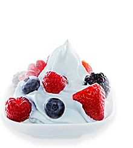

Sữa Chua Vị KiWi
Hương vị thương ngon của trái KiWi xanh ở đất nước New zealand có trong Sữa chua vị KiWi xanh mang đến một món ăn nhẹ siêu ngon và tốt cho hệ tiêu hoá. Xem chi tiết.Số lượng:

Sữa Chua Vị Xoài
Sữa chua vị xoài thích hợp cho mọi lứa tuổi, vì vậy hãy để cả gia đình quây quần bên nhau cùng thưởng thức món ăn thơm ngon bổ dưỡng này. Xem chi tiết.Số lượng:

Sữa Chua Vị Dưa Lưới
Trong dưa lưới chứa rất nhiều vỉamin C có tác dụng làm đẹp da hiệu quả. Phụ nữ ăn dưa lưới thường xuyên sẽ có làn da mịn màn. Xem chi tiết.Số lượng:
Sản phẩm mới

Sữa Chua Vị Mâm xôi
Quả mâm xôi là loại quả ăn loại hoa hồng, có nguồn gốc từ châu Âu, Bắc Á và được trồng ở các vùng ôn đới trên toàn thế giới. Có nhiều loại bao gồm đen, tím và vàng. Xem chi tiết.Số lượng:

Sữa Chua Vị Dâu Tây
Dâu Tây là môt loài cây thân thảo có thân ngắn và các chiếc lá mọc gần với nhau. Lá có nhiều gai và mặt lá có nhiều lông tơ, kích thước là có thể khác nhau ở từng giống. Xem chi tiết.Số lượng:

Sữa Chua Vị Việt Quất
Quả việt quất chứa các chất dinh dưỡng tốt cho sức khoẻ như chất xơ, kali, folate, vitamin C và vitamin B6(những chất hỗ trợ rất tốt cho sức khoẻ của tim). Xem chi tiết.Số lượng:
Sản Phẩm Trái Cây

Sữa Chua Vị Bưởi
Bưởi là một loại quả thuộc chi Cam chanh có nguồn gốc từ Đông Nam Á. Bưởi tiếng Anh gọi là Pomelo, tuy nhiên ở Việt Nam được dịch là grapefruit. Xem chi tiết.Số lượng:

Sữa Chua Vị Táo Xanh
Táo xanh có hàm lượng chất xơ cao giúp tăng cường quá trình trao đổi chất cảu cơ thể. Bên cạnh đó còn giải nhiệt độc gan và hệ tiêu hoá. Xem chi tiết.Số lượng:

Sữa Chua Vị Dứa
Dứa có nhiều loại tên khác như là khóm, khớm, thơm gai hoặc huyền nương. Đây là một loại quả nhiệt đới. Dứa là cây bản địa của Nam Mỹ. Xem chi tiết.Số lượng: